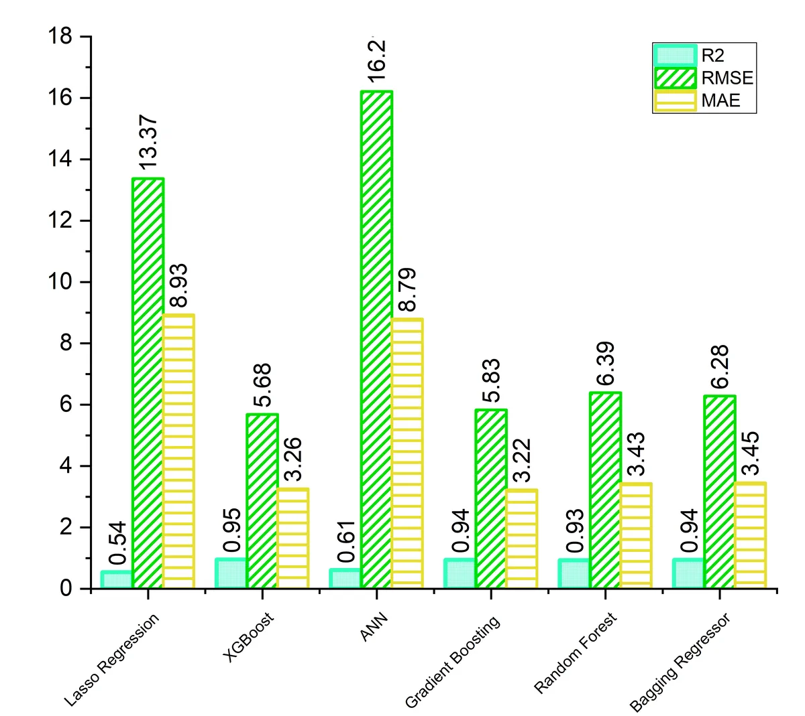
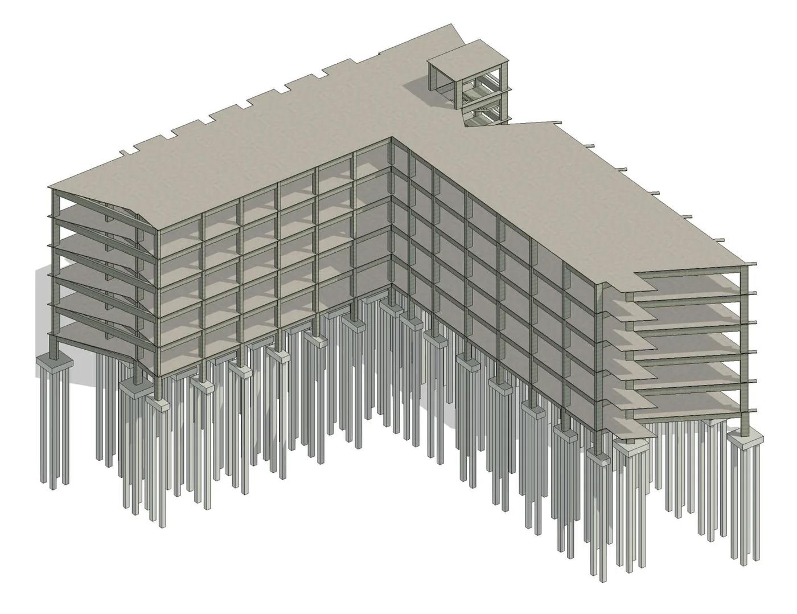

BIM-based Immersive Virtual Reality for Element-Level Embodied Carbon Assessment using Machine Learning Optimized Concrete Mix Design
Irfan Gazi · Supervisor: Md. Ikramul Hoque
B.Sc. thesis · In preparation
Abstract
Most of a building’s embodied carbon is locked in at the early design phase, yet that is when carbon is hardest to track: quantities are still rough, and the effect of a material choice is not visible to the designer. This thesis links a machine-learning model of concrete-mix embodied carbon to an immersive virtual reality model of the building. Six regression models were compared on predicting embodied carbon from concrete mix design. XGBoost performed best, at R² 0.95, against 0.54 for Lasso regression. Its prediction is combined with element quantities from a Revit structural model and brought into a Unity VR environment. There, a designer can select any column, beam, slab, stair or pile and see its embodied carbon and how much they could save by switching to a greener mix.
Carbon Prediction
Lasso regression, XGBoost, an artificial neural network, gradient boosting, random forest and a bagging regressor were compared on R², RMSE and MAE. XGBoost led on all three.

From BIM to VR
Element quantities come from the Revit structural model. In the Unity environment, an element selector reports the embodied carbon of the selected column, beam, slab, stair or pile.
